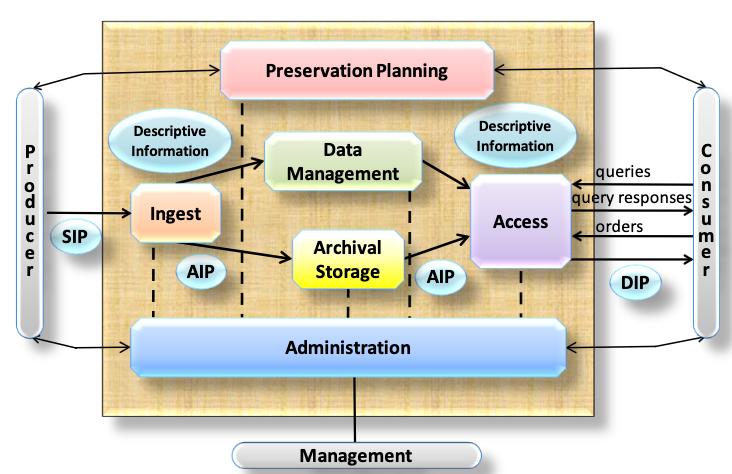

%%{init: {"look": "handDrawn","flowchart": { "htmlLabels": false }}}%%
flowchart TB
subgraph R["Data Repository Workflow"]
A["Deposit<br/>(Upload files + enter metadata)"]
B["Curation / Review<br/>(Metadata checks, structure, policy compliance)"]
C["Approval<br/>(Embargo, access rights, final validation)"]
D["Publication<br/>(Assign PID, freeze version, create landing page)"]
E["Post‑Publication<br/>(Versioning, access requests, metadata updates)"]
end
A --> B --> C --> D --> E
Data Repositories
Data repositories support the archiving, curation, and publication of research data. Their core function is to take stabilised files and assemble them into a governed digital object with structured metadata, a persistent identifier, and controlled access.
In principle, repository software can support archiving without full publication, for example by keeping files dark or access‑restricted. In practice, however, many repository services are designed with publication as the default outcome. To soften this, they typically offer:
- embargo periods, during which files are not yet openly accessible
- restricted files, where access requires approval
Even in these cases, the repository entry (landing page) and its basic metadata are usually publicly visible, while the underlying files may be delayed or restricted.
Repositories operate primarily at the dataset level. They expect researchers to prepare a coherent data package consisting of:
- one metadata record
- one persistent identifier
- one landing page
File‑level metadata may be supported, but it is typically secondary. Repositories are therefore optimised for curation, governance, and long‑term retention of stabilised datasets, not for managing the volatile, rapidly changing files produced during active research.
Repositories typically provide:
- structured publication workflows (draft → review → publish)
- embargo and restricted‑access options
- defined roles (depositors, curators, administrators)
- access controls aligned with institutional or funder policies
- archival packaging (e.g., BagIt, dataset bundles)
- limited or single‑backend storage coordination
In short, repositories excel at turning stabilised files into citable, discoverable, and preservable digital objects, but they are not designed to orchestrate large‑scale or frequently changing data during active research. That role belongs to policy engines, which operate earlier in the lifecycle.
The Repository Workflow
This workflow is implemented differently across repository platforms, but the underlying logic is the same: stabilised files are transformed into a governed dataset with metadata, identifiers, and access controls. The following platforms illustrate how these principles appear in real systems.
Repository Platforms
Dataverse
Dataverse is strongly dataset‑centric: the dataset is the primary digital object, and all files are organised within that structure.
- a metadata record based on disciplinary templates
- versioning across drafts and releases
- a clear publication workflow
- a DOI
Dataverse supports:
- embargoes
- restricted files with request workflows
- file‑level metadata
- tabular data ingest (extracting variables, labels, formats)
- dataset‑level citations
It is ideal for institutions that want a curation‑centric repository with well‑defined roles and governance.
Dataverse aligns with the OAIS Reference Model (see below).
Invenio / Zenodo
Invenio is a modular repository framework used to build institutional and disciplinary repositories.
Zenodo, built on Invenio, is a public repository offering free long‑term hosting.
Invenio supports:
- configurable deposit forms
- metadata schemas
- review and curation workflows
- DOI registration
- access control
- landing pages
Invenio aligns with the OAIS Reference Model.
Zenodo supports:
- any file type
- automatic DOI assignment
- concept DOIs and version DOIs
- GitHub integration (archiving releases automatically)
- long‑term preservation
Zenodo is widely used for software, code releases, and small to medium‑sized datasets.
Archival Packaging and Preservation Standards
Data repositories do more than curate and publish datasets—they also support the long‑term preservation of digital objects. To do this reliably, repositories rely on a set of archival packaging formats, metadata standards, and preservation models that ensure data remains interpretable, verifiable, and transferable over decades.
The most widely used frameworks in this space include BagIt, OAIS, PREMIS, METS, and RO‑Crate.
Each addresses a different part of the preservation problem.
- BagIt — a packaging format for file transfer and fixity
- OAIS — a conceptual model for long‑term preservation
- PREMIS — a metadata standard for preservation events and provenance
- METS — an XML framework for structuring digital objects
- RO‑Crate — a JSON‑LD format for research objects and workflows
BagIt: Packaging Files for Transfer and Fixity
BagIt is a simple, robust packaging format used to bundle files together with the metadata needed to verify their integrity.
A BagIt “bag” contains:
- a data/ directory with the files
- manifest files with checksums (fixity information)
- optional tag files with descriptive or administrative metadata
A minimal BagIt directory might look like this:
mydataset-bag/
├── bagit.txt
├── bag-info.txt
├── manifest-sha256.txt
└── data/
├── results.csv
└── readme.txt
bagit.txt declares the BagIt version and encoding:
BagIt-Version: 1.0 Tag-File-Character-Encoding: UTF-8bag-info.txt conatins high-level metadata about the “bag”
Bag-Software-Agent: Example BagIt Creator 1.0 Bagging-Date: 2024-05-01 Contact-Name: Research Data Teammanifest-sha256.txt contains the checksums for all files in
/data:3a7bd3e2360a3d... data/results.csv b1946ac92492d... data/readme.txt
Repositories use BagIt because it:
- ensures fixity through checksums
- supports validation after transfer
- is storage‑agnostic
- works well for large datasets
Many repositories generate BagIt packages for archival export or transfer to preservation systems.
OAIS: The Conceptual Model Behind Preservation
The OAIS Reference Model (Open Archival Information System) is the foundational conceptual framework for digital preservation. It defines six functional entities that together define how a trustworthy digital archive operates.
Ingest handles the acceptance of Submission Information Packages (SIPs) from producers. It performs quality checks, prepares Archival Information Packages (AIPs) according to the archive’s standards, creates or gathers descriptive metadata, and coordinates the transfer of AIPs into archival storage.
Archival Storage is responsible for the storage, maintenance, and retrieval of AIPs. It adds new AIPs to long‑term storage, manages storage hierarchies, performs fixity checks and media refreshment, supports disaster recovery, and supplies AIPs to the Access function when requested.
Data Management maintains the archive’s descriptive metadata and administrative information. It manages database schemas, loads new metadata, executes queries, and produces reports needed for discovery, administration, and audit.
Administration oversees the operation and governance of the archive. It negotiates submission agreements, audits incoming SIPs, manages system configuration, monitors performance, maintains policies and standards, and supports users and producers.
Preservation Planning monitors the technology environment and the needs of the designated community. It recommends format migrations, updates to AIPs, risk assessments, and preservation strategies. It also designs templates for SIPs and AIPs and develops plans and prototypes to ensure long‑term accessibility.
Access provides services that allow consumers to discover, request, and obtain information from the archive. It manages user requests, applies access controls, coordinates the delivery of Dissemination Information Packages (DIPs), and generates query responses and reports.

Most repositories implicitly follow OAIS principles, even if they do not implement the full model.
References - https://ccsds.org/Pubs/650x0m3.pdf, pp. 4-1
PREMIS: Preservation Metadata for Long‑Term Stewardship
PREMIS (Preservation Metadata: Implementation Strategies) is the most widely adopted standard for preservation metadata, i.e. information needed to ensure long‑term usability and authenticity.
PREMIS describes:
- objects (files, bitstreams, representations)
- events (ingest, fixity checks, migrations)
- agents (people, software, systems)
- rights (permissions, licenses)
Repositories and preservation systems use PREMIS to document:
- fixity checks
- format migrations
- provenance events
- authenticity and integrity
- preservation actions over time
PREMIS is expressed in XML and often embedded inside METS or other packaging formats.
METS: Structuring Complex Digital Objects
METS (Metadata Encoding and Transmission Standard) is an XML‑based framework for describing the structure of complex digital objects and linking them to metadata.
A METS document can include:
- structural maps (how files relate to each other)
- administrative metadata (technical, rights, provenance)
- descriptive metadata (often embedded or referenced)
- file inventories
METS is commonly used in:
- digital libraries
- institutional archives
- preservation systems that need rich structural description
Repositories may use METS internally or for archival export.
%%{init: {"look": "handDrawn","flowchart": { "htmlLabels": false }}}%%
flowchart LR
SIP["Submission Information Package (SIP)"] -->|Ingest| AIP["Archival Information Package (AIP)"]
AIP -->|Access| DIP["Dissemination Information Package (DIP)"]
subgraph AIP_Contents["Inside the AIP"]
METS["METS<br/>Structural Map + File Inventory"]
PREMIS["PREMIS<br/>Preservation Metadata<br/>(Events, Agents, Rights)"]
end
AIP --> AIP_Contents
RO‑Crate: Lightweight, Web‑Native Research Object Packaging
RO‑Crate is a modern, web‑native packaging format designed for research objects, especially those involving workflows, software, and computational provenance.
An RO‑Crate consists of:
- a crate directory
- a JSON‑LD metadata file describing all files and their relationships
- optional workflow, provenance, or software metadata
Below we illustrate an example:
my-crate/
├── ro-crate-metadata.json
├── ro-crate-preview.html
├── results.csv
├── readme.txt
├── input-data.json
└── workflow.cwlThe file ro-crate-metadata.json is a JSON-LD file, a file which uses linked data to describe the relationship between the files in the package:
{
"@context": "https://w3id.org/ro/crate/1.1/context",
"@graph": [
{
"@id": "./",
"@type": "Dataset",
"name": "Example Dataset with Workflow",
"description": "A dataset demonstrating RO-Crate with workflow and input/output relationships.",
"hasPart": [
{ "@id": "results.csv" },
{ "@id": "readme.txt" },
{ "@id": "input-data.json" },
{ "@id": "workflow.cwl" }
]
},
{
"@id": "results.csv",
"@type": "File",
"encodingFormat": "text/csv",
"name": "Analysis Results",
"wasGeneratedBy": { "@id": "workflow.cwl" }
},
{
"@id": "input-data.json",
"@type": "File",
"encodingFormat": "application/json",
"name": "Input Data for Workflow",
"usedByWorkflow": { "@id": "workflow.cwl" }
},
{
"@id": "workflow.cwl",
"@type": "SoftwareSourceCode",
"name": "Analysis Workflow",
"programmingLanguage": "CWL",
"url": "workflow.cwl",
"input": { "@id": "input-data.json" },
"output": { "@id": "results.csv" }
},
{
"@id": "readme.txt",
"@type": "File",
"encodingFormat": "text/plain"
}
]
}RO‑Crate is designed for:
- FAIR workflows
- reproducible research
- machine‑actionable metadata
- integration with workflow engines and policy engines
It complements, rather than replaces, traditional archival formats like BagIt.
How These Standards Fit Together
These standards address different layers of preservation:
| Standard | Purpose | Typical Use |
|---|---|---|
| BagIt | Package + fixity | Transfer, export, AIP packaging |
| OAIS | Conceptual model | Preservation planning, repository design |
| PREMIS | Preservation metadata | Fixity checks, migrations, provenance |
| METS | Structural metadata | AIP structure, digital libraries |
| RO‑Crate | Research object packaging | Workflows, software, FAIR pipelines |
Most repositories do not expose these standards directly to end‑users. Instead, they use them internally for archival export, preservation workflows, or integration with institutional archives.
Repositories may use one or several of these standards depending on their role:
- Publication‑oriented repositories often use BagIt for export and basic fixity.
- Preservation‑oriented repositories may combine BagIt + METS + PREMIS.
- Workflow‑oriented systems increasingly adopt RO‑Crate for computational provenance.
Together, these standards form the technical backbone that allows repositories to preserve digital objects reliably and integrate with institutional or national preservation infrastructures.